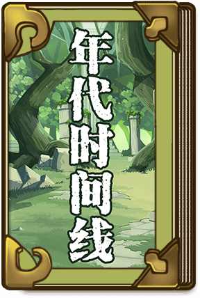
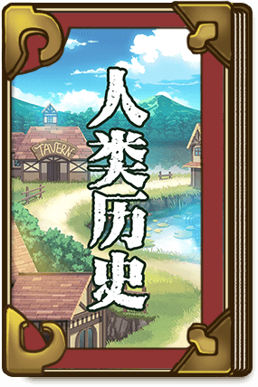
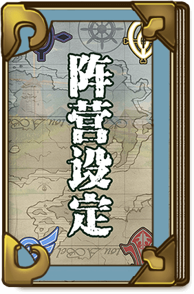
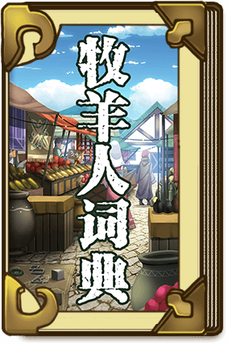

QQ
QQ
-
《牧羊人之心》抽蛋概率公布
4月11日维护公告
《牧羊人之心》网络游戏适龄提示
《牧羊人之心》违规角色处罚公告
游戏用户隐私协议
-
4月11日维护公告
《牧羊人之心》违规角色处罚公告
游戏用户隐私协议
《牧羊人之心》史莱姆礼盒概率公布
#小林家的龙女仆#联动确定！
-
原创作者激励计划 正式开启
第五章主线内容更新
来自龙族的试练！挑战限时开放
驯养师挑战赛，开幕！
端午庆典与驯养师季前赛
-
《牧羊人之心》抽蛋概率公布
《牧羊人之心》网络游戏适龄提示
安卓官服客户端更新说明
1.23版本活动蛋池概率说明
魔物等级50~60级突破
-

远古时代
h0年以前，人类还没有登陆人外的大陆—卡露蒂亚朵阿贝（KarDia tou ABel，简称卡露蒂亚）。大陆被以恶魔种、天使种、龙种为主的高阶物种统治，天使种与恶魔种处于长久的战争之中。
冒险者时代
h0~h760年间，人类登陆，在沿海建立了村落并不断的扩张根据地。在与恶魔对抗时，受到了天使种的帮助，并教会了人类使用简单的元素魔法和炼金术。村落和城镇开始出现，为了探索和利用更为广阔的土地，在高额的赏金与回报下，涌现出了大量的冒险者，形成了类似勇者斗恶龙的冒险者时代。
人外的黄昏
h760~h1100年间，恶魔姬阿露法驱使大洗脑魔法，操纵能天使叛变，胁迫天使种神圣阶级，破坏了天使种建立的用于镇压魔物残暴本性的祭坛中的理性之楔，个性残暴的龙族、恶魔失去了束缚，野兽和妖精和精灵们也回归了残食本性，互相残杀。
驯养师时代
h1150年间到现在（h1650），人类结合自己原来的知识发现了驯化魔物的方法，也使人类看到了对抗魔物的新希望，驯养文明开始兴起。人们最终成功创造出了农林、畜牧、制造、运输等领域高度发达的驯养文明。
-

h761 “人外的黄昏”(Ράγκναροκ) 约900年前 人类的“黑暗时期”到来
天使种“理性之楔”的破碎导致自然界种族间和种族内无差别的厮杀蔓延至大陆全土，人类被迫退守并聚居到更安全的村落。虽然在死于战火的人并不多，但是因为食物短缺和密集传播的瘟疫，大陆上的人口还是锐减到100万以下。
h790-1050 “人外的黄昏”的影响趋于沉静
各个居住圈涌出了一些勇敢的先驱（大多数是食不果腹的较低阶层和奴隶），决定离开安全的地区，向广阔的北部大陆进发。他们拖家带口，大约组建了一支3000人的先遣队，成为最初的冒险者。 一些大胆的冒险者开始积极尝试驯养一些野兽系的人外，证明并相信人外是可以驯服为人类所用的，虽然因为本性凶暴难以驯化，并没有取得进一步的发展；而对魔物的恐怖与天使的信仰继续在（主要是留守居住圈的）人类社会中发酵，“克里斯汀神教”沦为统治阶级的工具。
h1160-h1450 牧师时代/驯养师时代(Hλικία Ποιμενικός) 驯养文明的元年
经过100多年，冒险者的领土开拓取得了一些实质性的进展，绘制了第一张简易世界地图，划分出数十个人类实际控制的区域冠以领地。冒险者的队伍不断扩大，并在广阔的大陆上建立起一些新的聚落，包括7号博洛克斯 (后巴尔曼帝都)在内等人口超过5万人的村镇。在这当时被称为“新世界”的新领土上，逐渐产生了新的属于“冒险者”的秩序（巴尔曼帝国的雏形）。
-

原住魔物阵营
最早具有统治地位的高阶种有—— 居住在海洋的人鱼种：居住在海底，擅长声音、脑部影响控制等以波为载体的魔法，与其他的种族交集甚少，几乎处于与世无争的状况。 居住在陆地的龙种： 龙种除少量特别的品种外，基本都喜欢居住在高山的洞窟中，也能自己筑起高耸入云、如石塔般的巢穴，能使用单一的元素魔法。居住在浮游大陆的天使种： 天使种是魔法文明高度发达的物种，能够精确的控制魔法，群居于漂浮在天空中、充满魔法矿脉的浮游大陆—阿罗特(aroetem)，变相的扮演着陆地的调整者，实际是为了防止过度强大的威胁出现。以及居住在地底的恶魔种：居住于地下，以小聚落的形式在地下建设自己的地下城并有组织的行动，能够感受到地下深层的魔法矿脉的强大魔力，使用比天使种能量规模更强大的粗放型魔法。
人类阵营
阿格莱恩独立王国 ·成立70余年的新兴小国。依仗高度发达驯养科技走在文明的前列，倡导魔物地位的解放，是故事发生的主要舞台。疆土位于大陆东北端，被延绵的幸运山脉所隔开，囊括了莉安湖哺育下的古阿格莱恩区域，野露、塔姆的两河流域与戈蒂亚高地和周边岛屿。王都莉莉托斯和港口都市法蓝是最发达的城市.对各种思潮都有着极强的包容力。现任国王：爱莉(女王)
-

勇者
从“冒险者时代”沿袭至今的职业，也被称为冒险者，根据战斗方式的不同，分成了剑士、弓箭手、魔法师等很多不同的职业。
驯养师
经营牧场，负责驯化和培育魔物的职业，是阿格莱恩的根基。
猎人
和勇者追求极致的战斗力不同，猎人只是想通过狩猎和伐木来收集材料进行物资的交换，，猎人协会对猎人狩猎的种类和活动区域也有严格的规定。
魔法
相传人类在来到卡露蒂亚大陆之前还不会使用魔法，是天使种传授给了人类利用魔法的技术，然而也只是一些很简单的元素和治愈魔法。卡露蒂亚的很多魔物都能使用较为单一的魔法，在巴尔曼帝国积极的研究下，部分新的魔法技术才慢慢被人类所掌握。
魔法装置
模拟魔法的触发过程的自动装置，核心容器通常是宝石或者水晶。能够触发某种固定的魔法，只要注入足够的魔力就能启动。
上位种魔物
通常指天使、龙、人鱼和恶魔等有较高智力的物种，也包括一些妖植、精灵、珍兽以及一些没人发现过的古老物种。